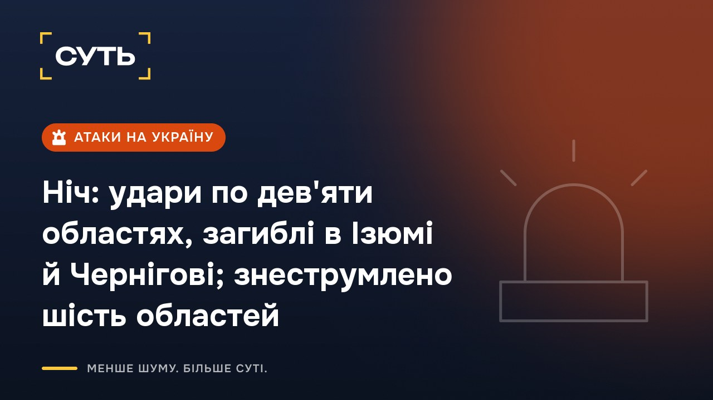

Ніч: удари по дев'яти областях, загиблі в Ізюмі й Чернігові; знеструмлено шість областей

- В Ізюмі на Харківщині внаслідок комбінованого удару РСЗВ і дронів по житловому сектору загинула жінка, шестеро поранені; горіли будинки й авто. — ДСНС, МВС
- У Чернігові вранці удар по території підприємства спричинив пожежу; за даними ДСНС, одна людина загинула, ще одна травмована. — ДСНС
- У ніч на 27 листопада удари пришлися на інфраструктуру, підприємства й житлові будинки у дев'яти областях; загинув один, щонайменше шестеро поранені. — Укрінформ
- Унаслідок удару ворожого БПЛА по Чернігову постраждала людина. — Укрінформ
- Через російські атаки частина споживачів знеструмлена в шести областях; в Дніпропетровській і Запорізькій діють аварійні відключення. — Економічна правда, Укренерго
Ця новина — з Telegram-каналу «Суть.»
Коротко, з першоджерел, без шуму.